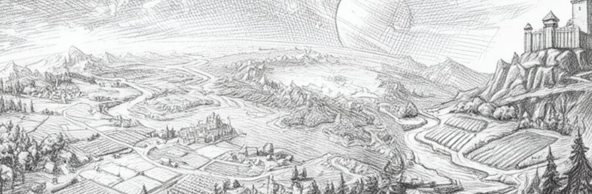
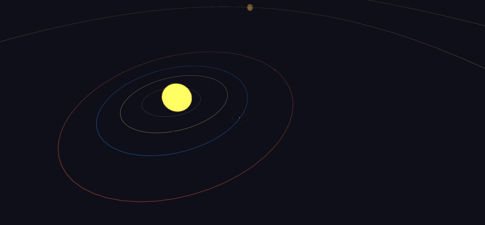

A 3D colony builder where every action has real consequences.

The architects of THRUM built the soul of the world first. Before the first stroke of ink was ever laid, they forged the invisible clockwork that governs how a kingdom breathes, how resources flow, and how iron meets shield. By focusing on the core simulation from the start, they ensured that every action has a real consequence, creating a true sandbox where the world reacts to your choices rather than a script.
Once this foundation was solid, the world took its shape: a rugged, medieval era etched in ink and shadow. While your journey begins among knights and castles, the simulation is designed to be a vast vessel—built with the potential to eventually welcome other civilizations or strange, ancient races from beyond the mists.

Your saga starts with just two lone souls standing upon an untamed region of the planet. From these two pioneers, you will sow the seeds of a colony, nurturing it through the seasons until your banners are carried by massive legions of warriors.
The world scales seamlessly with your ambition. You have the freedom to walk beside a single scout on a path of stealth or command a sea of steel through complex formations and tactical maneuvers. Whether you are managing the needs of a single hearth or the logistics of a global army, the simulation remembers every strike, every harvest, and every triumph.
Inspired by Dwarf Fortress and Total War, THRUM features a persistent planet where you lead pioneers to build a civilization. Every unit has a procedural personality and physical weight. The core simulation now handles time, aging, and lineage. Units are born, age, earn experience, and form relationships naturally.
THRUM is more than just a game of numbers; it is a living history waiting for your first move. How will your two pioneers be remembered?